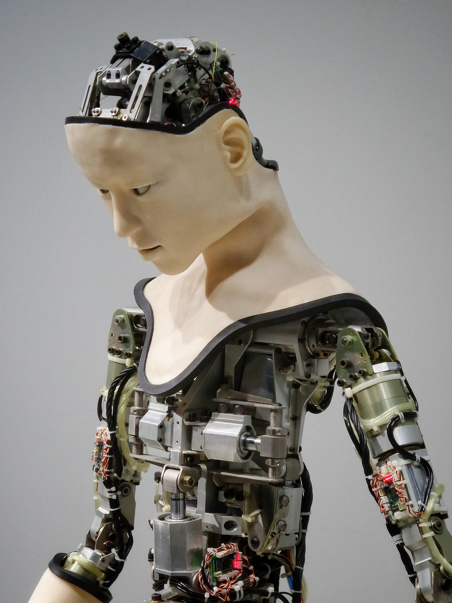
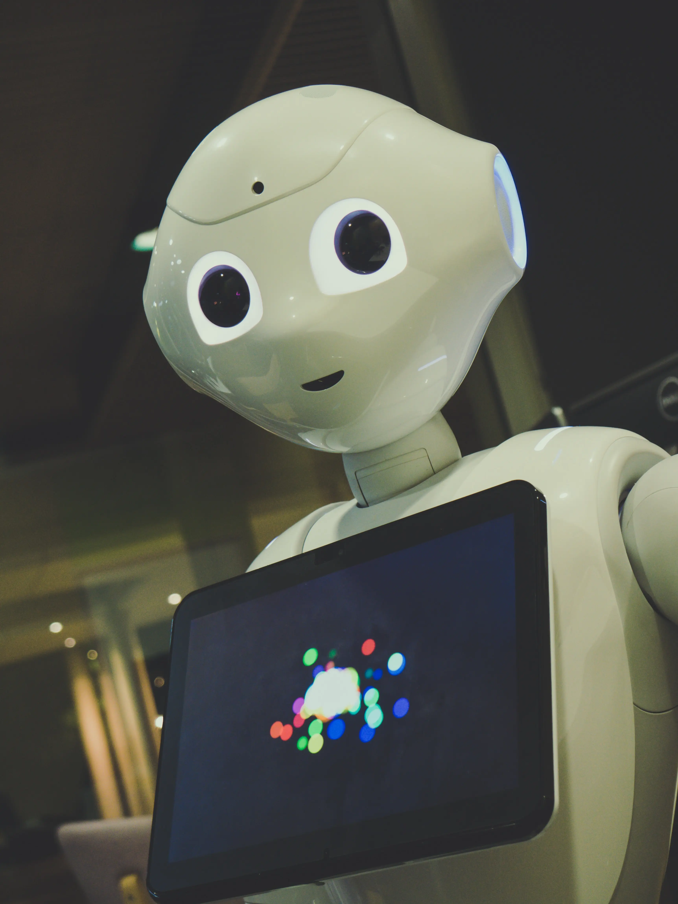

Changes brought by AI
Changes brought by AI
Changes brought by AI
Since the Industrial Revolution, humanity has undergone a series of changes. We have gone from living in small villages to building expansive cities, and our methods of production have changed dramatically as well. Now, it seems that we are on the cusp of another change - one that will be brought about by artificial intelligence.
Power Distribution
AI is changing the distribution of power within organizations. In the past, power was concentrated at the top of the organization in the form of a few key decision-makers. However, AI is giving employees at all levels of the organization access to information and decision-making tools that were previously only available to senior executives.
This shift in power is resulting in flatter, more horizontal organizational structures. Employees are empowered to make decisions and take action without having to wait for approval from their superiors. As AI continues to evolve, we can expect to see even more changes in the way that power is distributed within organizations.

Artificial intelligence
Artificial intelligence is one of the most talked about and controversial topics in technology today. There are many different opinions on what artificial intelligence is, what it can do, and what its implications are for the future. However, there is one thing that everyone can agree on: artificial intelligence is changing the world as we know it.
Some of the changes that artificial intelligence is bringing about are very exciting, such as the potential for more personalised and targeted advertising, or the development of autonomous vehicles. Other changes are more worrying, such as the impact of AI on jobs and the economy.
Whichever side of the fence you're on, there's no denying that artificial intelligence is having a major impact on our world. In this blog section, we'll be exploring some of the changes that AI is bringing about, and discussing what they could mean for our future.
World Powers
The rise of artificial intelligence is set to bring about profound changes in the global balance of power. In the past, technological revolutions have led to the rise of new world powers. With AI, it is likely that China will become the dominant superpower.
AI will give China a significant military advantage. The country is already investing heavily in AI research and development, and its companies are at the forefront of developing new applications for the technology. In particular, China is working on developing autonomous weapon systems that could be used to great effect on the battlefield.
In addition, AI will provide China with a major economic advantage. The country is already home to many of the world's leading tech companies, and its businesses are well placed to take advantage of the opportunities presented by AI. As AI brings about changes in manufacturing, logistics, and other sectors, China is likely to see a significant increase in its GDP.
The impact of AI is also likely to be felt in other areas of global politics. For example, as AI-enabled robots become increasingly capable of performing tasks that have traditionally been carried out by humans, there could be mass unemployment in developed countries. This could lead to social and political instability, as well as an increase in crime
Robots
Robots are increasingly becoming a staple in many industries as they offer a versatile and efficient way to carry out tasks that would otherwise be difficult or impossible for humans to do. In particular, robots are playing an increasingly important role in the manufacturing process as they are able to work long hours without tiring and can perform tasks with great precision.
One of the most significant changes that robots have brought about is the increased automation of factories and other production facilities. In the past, humans were required to operate machinery in order to create products but now, robots are able to carry out many of these tasks independently. This has led to a decrease in the number of people required to work in these environments and has resulted in increased efficiency and productivity.
Another change that has been brought about by robots is the way in which they are able to interact with humans. In the past, robots were often seen as machines that carried out orders without any emotion or understanding. However, thanks to advances in artificial intelligence, robots are now able to communicate with people and carry out tasks that require empathy or emotional intelligence.
This is particularly useful in healthcare and customer service industries where compassionate care is essential.
Overall, it is evident that robots have brought about a change.
Cars
Cars are one of the most common places that you will find AI. Many new cars come with some form of AI built in, whether it’s a basic voice assistant or something more advanced like autonomous driving. Here are some of the ways AI is changing the automotive industry.
One of the most talked-about features in new cars is autonomous driving. This is where the car can drive itself, and it’s made possible by AI. The car uses sensors and cameras to map out its surroundings and then makes decisions about how to navigate.
This technology is still in its early stages, but it’s improving all the time and it’s expected that autonomous cars will become more common in the next few years.
Another area where AI is being used in cars is safety. Some cars now have features like automatic braking which can prevent accidents. These systems use sensors and AI to identify potential hazards on the road and then take action to avoid them. This type of technology is becoming increasingly common and it’s likely that all new cars will have some form of it soon.
AI is also being used to make cars more efficient. Many new cars now come with features like adaptive cruise control
Machine
When it comes to technology, machine learning is one of the most hyped terms out there. But what exactly is machine learning, and what impact is it having on our lives?
In simple terms, machine learning is a form of artificial intelligence that allows computers to learn from data, without being explicitly programmed. This means that they can automatically improve given more data.
Machine learning is already having a profound impact on our world. Here are just a few examples:
- Machine learning is being used to diagnose diseases more accurately than ever before.
- Machine learning is being used to develop more personalized treatments for cancer patients.
- Machine learning is being used to create better predictive models for weather forecasting.
- Machine learning is being used to improve the accuracy of financial trading algorithms.
- Machine learning is being used to create more realistic virtual assistants, such as Apple's Siri and Amazon's Alexa.